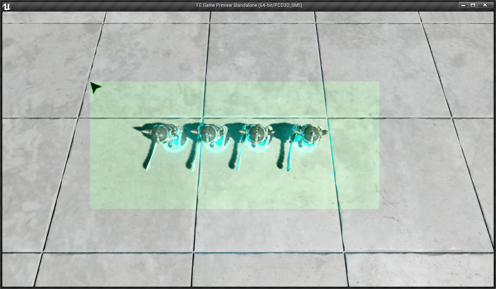

RTS Camera
Details

I will add more details to this page when I have time, just thought I would share my code for an RTS Camera for those of you who need a place to start! Let me know if you have any questions or suggestions to improve my code! The cursor is not locked into the viewport, I am still looking for a way to do this.
Also, for zooming with the mouse wheel, add the inputs for mouse wheel up and down with the names:
WheelMouseUp WheelMouseDown
Hope this helps!
Author: Connor Brewster
FESpectatorPawn.h
#pragma once
#include "GameFramework/SpectatorPawn.h"
#include "FESpectatorPawn.generated.h"
/** AFESpectatorPawn
* This Pawn Will Move Like An RTS Camera
*/
UCLASS()
class FE_API AFESpectatorPawn : public ASpectatorPawn
{
GENERATED_UCLASS_BODY()
public:
/** Camera Component */
UPROPERTY(VisibleAnywhere, BlueprintReadOnly, Category = Camera)
TSubobjectPtr<class UCameraComponent> CameraComponent;
/** Camera Z Angle */
UPROPERTY(EditAnywhere, BlueprintReadWrite, Category = Camera)
float CameraZAnlge;
/** Camera Radius From Pawn Position */
UPROPERTY(EditAnywhere, BlueprintReadWrite, Category = Camera)
float CameraRadius;
/** Camera Height Angle */
UPROPERTY(EditAnywhere, BlueprintReadWrite, Category = Camera)
float CameraHeightAngle;
/** Camera Zoom Speed */
UPROPERTY(EditAnywhere, BlueprintReadWrite, Category = Camera)
float CameraZoomSpeed;
/** Camera Radius Max */
UPROPERTY(EditAnywhere, BlueprintReadWrite, Category = Camera)
float CameraRadiusMax;
/** Camera Radius Min */
UPROPERTY(EditAnywhere, BlueprintReadWrite, Category = Camera)
float CameraRadiusMin;
/** Camera Movement Speed */
UPROPERTY(EditAnywhere, BlueprintReadWrite, Category = Camera)
float CameraMovementSpeed;
/** Camera Scroll Boundary */
UPROPERTY(EditAnywhere, BlueprintReadWrite, Category = Camera)
float CameraScrollBoundary;
/** Should the camera move? */
UPROPERTY(EditAnywhere, BlueprintReadWrite, Category = Camera)
bool bCanMoveCamera;
private:
/** Sets up player inputs
* @param InputComponent - Input Component
*/
void SetupPlayerInputComponent(class UInputComponent* InputComponent);
public:
/** Zooms In The Camera */
UFUNCTION()
void ZoomIn();
/** Zooms Out The Camera */
UFUNCTION()
void ZoomOut();
/** Gets the roatation of the camera with only the yaw value
* @return - returns a rotator that is (0, yaw, 0) of the Camera
*/
UFUNCTION()
FRotator GetIsolatedCameraYaw();
/** Moves the camera forward
* @param direcation - (1.0 for forward, -1.0 for backward)
*/
UFUNCTION()
void MoveCameraForward(float direction);
/** Moves the camera forward
* @param direcation - (1.0 for right, -1.0 for left)
*/
UFUNCTION()
void MoveCameraRight(float direction);
/** Repositions The Camera */
UFUNCTION()
void RepositionCamera();
/** Tick Function, Called Every Frame */
UFUNCTION()
virtual void Tick(float deltaSeconds) override;
};
FESpectatorPawn.cpp
#include "FE.h"
#include "FESpectatorPawn.h"
AFESpectatorPawn::AFESpectatorPawn(const class FPostConstructInitializeProperties& PCIP)
: Super(PCIP)
{
//Disable Standard WASD Movement
bAddDefaultMovementBindings = false;
//Set Default Camera Values
CameraRadius = 1000.0f;
CameraZAnlge = 0.0f;
CameraHeightAngle = 70.0f;
CameraZoomSpeed = 32.0f;
CameraRadiusMin = 750.0f;
CameraRadiusMax = 2000.0f;
CameraMovementSpeed = 2000.0f;
CameraScrollBoundary = 25.0f;
//TODO: While selecting units, the camera CANNOT move!
bCanMoveCamera = true;
//Intialize The Camera
CameraComponent = PCIP.CreateDefaultSubobject<UCameraComponent>(this, TEXT("RTS Camera"));
CameraComponent->AttachParent = this->GetRootComponent();
CameraComponent->bUsePawnControlRotation = false;
RepositionCamera();
//Enable Tick function
PrimaryActorTick.bCanEverTick = true;
}
void AFESpectatorPawn::SetupPlayerInputComponent(class UInputComponent* InputComponent)
{
check(InputComponent);
//Bind Mouse Wheel Zooming Actions
InputComponent->BindAction("WheelMouseUp", IE_Pressed, this, &AFESpectatorPawn::ZoomIn);
InputComponent->BindAction("WheelMouseDown", IE_Pressed, this, &AFESpectatorPawn::ZoomOut);
//Bind WASD Movement
//FOR TESTING PURPOSES ONLY!!!
//InputComponent->BindAxis("MoveForward", this, &AFESpectatorPawn::MoveCameraForward);
//InputComponent->BindAxis("MoveRight", this, &AFESpectatorPawn::MoveCameraRight);
}
void AFESpectatorPawn::ZoomIn()
{
//Don't execute any further if the camera can't move
if (!bCanMoveCamera)
return;
//Decrease the CameraRadius but clamp it between the min and max radii
CameraRadius = FMath::Clamp(CameraRadius - CameraZoomSpeed, CameraRadiusMin, CameraRadiusMax);
//Reposition the camera in the local space
RepositionCamera();
}
void AFESpectatorPawn::ZoomOut()
{
//Don't execute any further if the camera can't move
if (!bCanMoveCamera)
return;
//Increase the CameraRadius but clamp it between the min and max radii
CameraRadius = FMath::Clamp(CameraRadius + CameraZoomSpeed, CameraRadiusMin, CameraRadiusMax);
//Reposition the camera in the local space
RepositionCamera();
}
FRotator AFESpectatorPawn::GetIsolatedCameraYaw()
{
//Return a FRotator containing (0, CameraYaw, 0)
return FRotator(0.0f, CameraComponent->ComponentToWorld.Rotator().Yaw, 0.0f);
}
void AFESpectatorPawn::MoveCameraForward(float direction)
{
//Don't execute any further if the camera can't move
if (!bCanMoveCamera)
return;
//Calculate how much to move the camera by
float movementValue = direction * CameraMovementSpeed;
//Create a delta vector that moves by the movementValue in the direction of the camera's yaw
FVector deltaMovement = movementValue * GetIsolatedCameraYaw().Vector();
//Add the delta to a new vector
FVector newLocation = this->GetActorLocation() + deltaMovement;
//Set the new location of the pawn
SetActorLocation(newLocation);
}
void AFESpectatorPawn::MoveCameraRight(float direction)
{
//Don't execute any further if the camera can't move
if (!bCanMoveCamera)
return;
//Calculate how much to move the camera by
float movementValue = direction * CameraMovementSpeed;
//Create a delta vector that moves by the movementValue in the direction of the right of the camera's yaw
FVector deltaMovement = movementValue * (FRotator(0.0f,90.0f,0.0f) + GetIsolatedCameraYaw()).Vector();
//Add the delta to a new vector
FVector newLocation = this->GetActorLocation() + deltaMovement;
//Set the new location of the pawn
SetActorLocation(newLocation);
}
void AFESpectatorPawn::RepositionCamera()
{
//Create variables to hold the new values
FVector newLocation(0.0f, 0.0f, 0.0f);
FRotator newRotation(0.0f, 0.0f, 0.0f);
//Find Cos and Sin of the Camera Z Angle
float sinCameraZAngle = FMath::Sin(FMath::DegreesToRadians(CameraZAnlge));
float cosCameraZAngle = FMath::Cos(FMath::DegreesToRadians(CameraZAnlge));
//Find the Cos and Sin of the Camera Height Angle
float sinCameraHeightAngle = FMath::Sin(FMath::DegreesToRadians(CameraHeightAngle));
float cosCameraHeightAngle = FMath::Cos(FMath::DegreesToRadians(CameraHeightAngle));
//Set newLocation X to cosCameraZAngle * sinCameraHeightAngle * CameraRadius
newLocation.X = cosCameraZAngle * cosCameraHeightAngle * CameraRadius;
//Set newLocation Y to sinCameraZangle * sinCameraHeightAngle * CameraRadius
newLocation.Y = sinCameraZAngle * cosCameraHeightAngle * CameraRadius;
//Set newLocation Z to cosCameraHeightAngle * CameraRadius
newLocation.Z = sinCameraHeightAngle * CameraRadius;
//Set the new rotations
newRotation = (FVector(0.0f,0.0f,0.0f) - newLocation).Rotation();
//Set the camera's location and rotation to the new values
CameraComponent->SetRelativeLocation(newLocation);
CameraComponent->SetRelativeRotation(newRotation);
}
void AFESpectatorPawn::Tick(float deltaSeconds)
{
Super::Tick(deltaSeconds);
//Create variables to hold mouse position and screen size
FVector2D mousePosition;
FVector2D viewportSize;
//Get mouse position and screen size
UGameViewportClient* gameViewport = GEngine->GameViewport;
//Make sure viewport exists
check(gameViewport);
gameViewport->GetViewportSize(viewportSize);
//Make sure the viewport has focus(contains the mouse)
if (gameViewport->IsFocused(gameViewport->Viewport) && gameViewport->GetMousePosition(mousePosition) && bCanMoveCamera)
{
//Check if the mouse is at the left or right edge of the screen and move accordingly
if (mousePosition.X < CameraScrollBoundary)
{
MoveCameraRight(-1.0f * deltaSeconds);
}
else if (viewportSize.X - mousePosition.X < CameraScrollBoundary)
{
MoveCameraRight(1.0f * deltaSeconds);
}
//Check if the mouse is at the top or bottom edge of the screen and move accordingly
if (mousePosition.Y < CameraScrollBoundary)
{
MoveCameraForward(1.0f * deltaSeconds);
}
else if (viewportSize.Y - mousePosition.Y < CameraScrollBoundary)
{
MoveCameraForward(-1.0f * deltaSeconds);
}
}
}